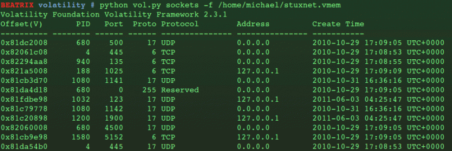

Everything on a running system – the operating system, running programs, files, everything – exists within system memory during runtime. The only stuff that’s truly running on a system is what’s stored in system memory, making the hard drive totally irrelevant unless we’re interested in historical data as evidence. A live acquisition and the right tools therefore provide an exact reconstruction of the target machine as it was when the capture was made, and this makes Volatility such a powerful tool for digital forensics.
Installation and Usage
For Linux systems we must compile (or rather build and install) Volatility from source, after it’s been extracted from the source download. As the root user:
#python setup.py build
#python setup.py install
Installation doesn’t give us a ‘$volatility‘ shell command. It’s run using the Python interpreter within the /volatility directory. When running it, the action to be performed and the filename of the memory dump are specified:
#python vol.py [option] -f [file name]
As an example, I was a forensic analyst who wanted a timeline of events from the memory capture, I’d use:
#python vol.py timeliner -f /home/michael/stuxnet.vmem
Network Activity
All the basic features we’d expect are there. We can get a list of ports/sockets that were open when the memory dump was acquired, using the ‘sockets‘ option.
Notice the offsets and process IDs in the first two columns of the output. They tell us roughly where we can find the processes that were using the ports, although I’m guessing there’s an easier way of doing that.
Then we have ‘connections‘ and ‘connscan‘, depending on the operating system in question. These reveal the TCP connections that were discovered, the remote and local addresses, and the PID. There wasn’t any information given in the particular memory dump I was looking at, which makes sense if the STUXNET capture was from an offline machine.

Processes and Running Applications
But can we get a list of executables that were running, along with their PIDs and the DLLs they were calling? Yes, yes we can:
#python vol.py dlllist -f /home/michael/stuxnet.vmem
Sometimes this is enough to narrow down where the malware might exist within our memory dump. Sometimes we must dig deeper. To get information about the windows that were open on the desktop at the time:
#python vol.py windows -f /home/michael/stuxnet.vmem
Of course, when there’s a large amount of information, it’s better to pipe the output to a separate file, plus we might want to analyse the data using another program or script:
#python vol.py windows -f /home/michael/stuxnet.vmem >> stuxnetwin.txt
Volatility also allows individual files to be extracted from a memory dump, which could be used for recovering files as evidence and producing malware samples:
#python vol.py dumpfiles -f /home/michael/stuxnet.vmem --dump-dir /home/michael/stux
References